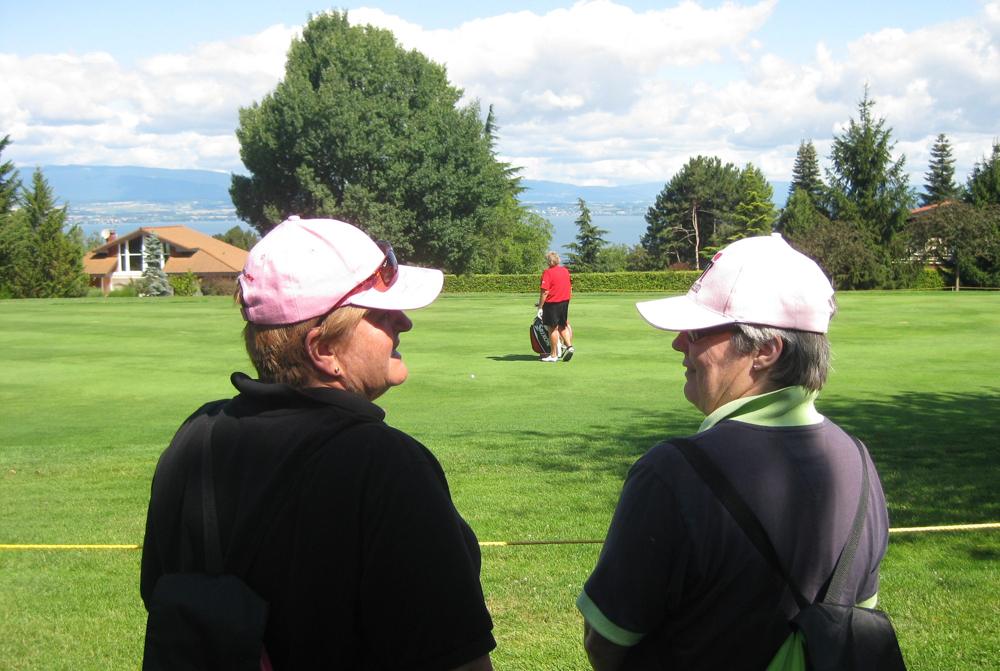
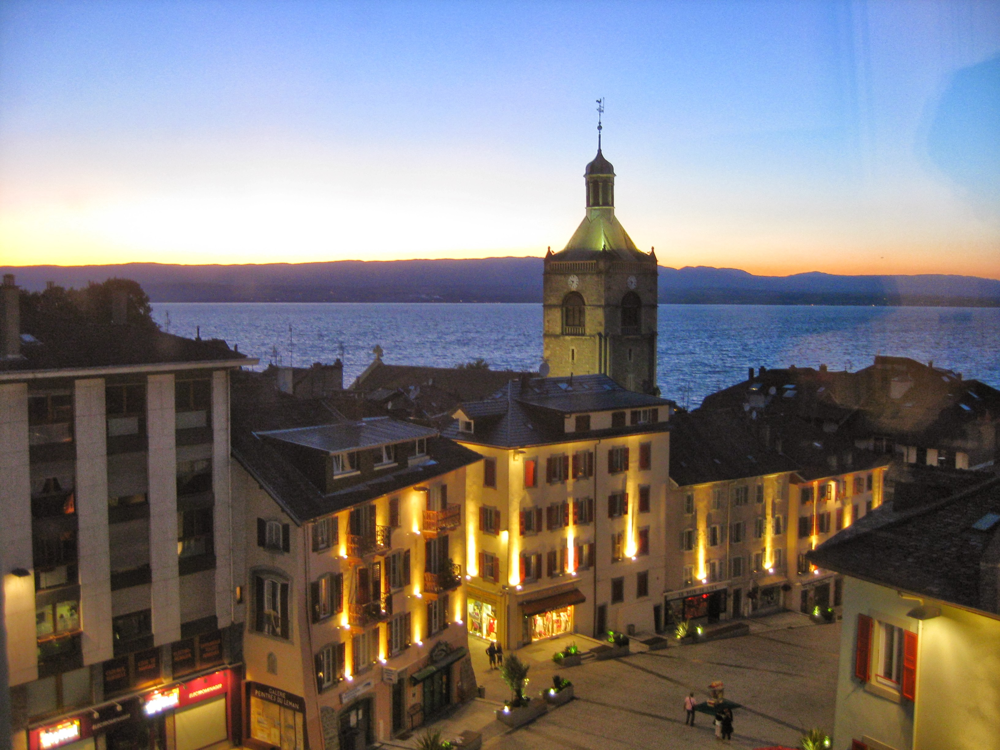

|
|
|
|
Evian Masters - Saturday July 25th - Day 3
At the golf course, stood in the players area watching the action on the putting green and driving range, and struck up a conversation with Mickey Walker until she had to wander off and chat with Alison Nicholas. It was a gorgeous day, sunny and hot, so chose a shady spot on the 1st fairway to watch a few groups come through. Lorena was playing with Erina Hara, Natalie was playing with Jelly, and Tutta was playing with the new US Womens Open champion Eun-Hee Ji. Next up was Tania Elosegui and Michelle Wie. Headed back to Place Annika Sorenstam to check out the early scores. Y Ddraig Goch was flying with the Korean and Japanese flags.
{kind=link}
Headed out onto the main section of the course looking out for LD. Found her and the Aussie lasses on the 7th hole. Saw LD and Sun Young Yoo play through the 8th and hung around there rather than trudge up the hill to the top section. Watched the same lot as I watched on the 1st play through the 8th starting with Lorena and finishing with Wie.
Wandered back to the 14th green in time to see Momoko and Terry arrive. Watched Momoko tee off on the 15th. Terry gave me a nod of acknowlegement. Watched Rachel Hetherington and Candie Kung play and then LD arrived. Followed LD up the 15th. Spotted Mickey Walker sitting in her tent studio at the side of the 15th fairway. She waved at me as I passed.
LD is amazing. The 15th is a 559 yard true 3 shot par five up to an elevated green. She pulled out an iron on the tee and whacked it down the fairway. She got to her ball, pulled out an iron again, no practice swing, hit her lay up shot. Same thing again on her third shot onto the green. Unfortunately she missed the birdie putt.
 Following my Skybox liquid lunch, the afternoon golf started with Cristie Kerr on the 6th tee. Karine Icher (who was having a bad day eventually shooting 77) had a big gallery and was playing with Stacy Lewis. Headed out to the 14th to watch the leaders come through. Alfie was playing with Wendy Ward and Karrie was paired with Se Ri. When Se Ri teed off on 15, I think her ball was going right from the moment she started her downswing, but her very large caddie had a right go at the woman next to me who had taken a snap.
{kind=link}
Waited for Sophie to tee off on 15 and followed her back to the 18th. She had a great look at birdie on 16 but didn't hit it. The classic never up never in. She hated her tee shot on the par 3 17th taking her hand off the club. However, the reaction changed to a sheepish grin and then relieved laughter. When we got to the green, having risk life and limb on the track down the steep slope and over a fence, she had a short birdie put which she converted. A fine round that left her as co-leader at the end of the day.
I dashed back to the Skybox to sat in the back row of the grandstand with my Veuve Cliquot rose until Brew in the final group appeared. Had to wait a bit for the courtesy ride to centre ville. The Hotel Royal lot seemed to be getting priority. Ended up sitting with a young good looking lass going to the railway station. The driver was chatting her up like crazy. All in French of course.
We had our usual couple of glasses at the L'Embuscade bar with the Aussies before moving onto the Italian restaurant opposite our hotel. As usual, with no reservation, we had to sit inside but sat next to a big open window it was just like being outside. Mickey Walker came in and stopped to say Hi. Had one more glass of vin rouge at L'Embuscade bar before turning in for the night. Next thing there were massive bangs and the fireworks had started. It was the player's gala night up at the Hotel Royale. The fireworks were apparently spectacular. Didn't see them as they were going off behind the hotel.